...making Linux just a little more fun!
By Deividson Luiz Okopnik and Howard Dyckoff

|
Contents: |
Please submit your News Bytes items in plain text; other formats may be rejected without reading. [You have been warned!] A one- or two-paragraph summary plus a URL has a much higher chance of being published than an entire press release. Submit items to bytes@linuxgazette.net. Deividson can also be reached via twitter.
 Next Ubuntu will shed 'Netbook' Edition
Next Ubuntu will shed 'Netbook' EditionThe next release of Ubuntu, code-named Natty Narwal, is expected in the next few weeks, but there will be only 2 major platforms targeted.
The development of future Ubuntu distributions will merge into a single version of Ubuntu for desktops and netbooks, known simply as "Ubuntu" for Version 11.04. See more details in the Distros section, below.
20th Anniversary of Linux Celebrations Kick Off at the LF SummitThe Linux community will come together to celebrate 20 years of Linux. In August of 1991, Linux creator Linus Torvalds posted what today is a famous or infamous message to share with the world that he was building a new operating system. The Linux Foundation will kick-off months of 20th Anniversary celebrations starting at the Collaboration Summit in San Francisco, April 5-8. Attendees will learn what else is in store for the months leading up to the official celebration in August of 2011.
The Linux Foundation invites everyone in the Linux community to participate in celebrating this important milestone. There will be a variety of ways to get involved, including an opportunity to record a personal message to the rest of the community about Linux' past, present and/or future in the the "20th Anniversary Video Booth." The Booth will be located in the lobby area of the Collaboration Summit, and the messages will be compiled into a display to be shared online and at LinuxCon in August.
"The Linux Foundation Collaboration Summit continues to be one of our most important events of the year.," said Jim Zemlin, executive director at The Linux Foundation. "The Summit will showcase how Linux is maturing while kicking off an important year for the OS that will include 20th anniversary celebrations where people from throughout the community can participate online or at our events in a variety of different ways."
Android Developers Confident about Oracle-Google LitigationAttendance at AnDevCon in March was almost a sellout and indicative of the rapid growth of Android in the Open Source Community. Google IO did sell out in less than an hour of open registration. At this event, 36% of attendees came from organizations with more than 1000 developers and about 50% came from organizations with more than 100 developers.
Oracle sued Google in August of 2010 over its possible use of Java source code in Android without licensing.
During the conference, representatives from Black Duck and competing firm Protocode both told LG that most large firms involved in developing Android apps seem relatively unconcerned about the legal battle between Oracle and Google. Many of these issues have played out before for Linux veterans and a relative calm pervades the Android community.
Said Peter Vescuso of Black Duck software, "Google is the goat to sacrifice at Oracle's altar", meaning that most developers do not expect any serious legal threats to be directed at them.
He added that many of their customers were using Android, including 8 of 10 biggest hand set makers. "The most shocking thing about the law suit is that there is almost no reaction from customers; it's not their problem."
Black Duck made an analysis of 3800 mobile open source companies in 2010. This has been roughly doubling every year since 2008. When Black Duck looked at development platform, 55% listed Android, 39% listed IOS, which was not surprising as even iPhone apps use chunks of open source code. Android has the advantage of being GPL-based, while IOS is not.
According to Protocode's Kamil Hassin, some of their smaller Android customers have been hesitant about the potential outcome of Oracle's litigation but many are now moving more into Andriod development.
He noted that Black Duck focused on bigger companies with large code bases, while Protocode's products were lighter weight and focused more on where FOSSw occured internally, especially code from Apache Ant, Derby, MySQL, and even more on PostgreSQL.
Google Delays Honeycomb Delivery to Open SourceGoogle will delay releasing its Honeycomb source code for the new series of Android-based tablet computers as it works on bugs and hardware compatibility issues. Honeycomb is called Android 3.0, while mobile phone developers are expecting the release of Android 2.4 shortly.
Google has indicated that some UI improvements will be back-ported to Android phones in 2.4.
Speaking with Bloomberg News on March 25th, Andy Rubin, Google's top honcho for Android development, said that they would not release the source code for the next several months because there was a lot more work to do to make the newer OS ready for "other device types including phones". Instead, source code access will remain only with major partners such as HTC and Motorola.
Developer blogs initially showed mixed opinions of the delay, with a few developers recognizing that Google was trying to get a better and more consistant user-experience for future Android tablets, especially less expensive models that will come from small third world manufacturers.
Oracle dropping future Itanium development for its DatabaseIn March, Oracle announced that it would discontinue development work for future versions of the Oracle database on Intel Itanium RISC platform. In a press statement, Oracle said, "Intel management made it clear that their strategic focus is on their x86 microprocessor and that Itanium was nearing the end of its life."
Oracle added, "Both Microsoft and RedHat have already stopped developing software for Itanium."
Oracle pointed to trends that show no real growth in Itanium platforms, which are almost exclusively sold by its rival HP. Intel publically defended its chip platform and said work would continue on the next 2 generations of Itanium - Poulsen and Kittson, but did not state clear support for the future of Itanium after that.
Oracle support would continue for current versions of its database running on Itanium for the next several years, but would be stopping development on new versions. This would have a negative effect on future sales of HP SuperDome servers and force current customers to reconsider strategic vendor relationships.
According to a blog at Forrester Research, "Oracle's database is a major workload on HP's Itanium servers, with possibly up to 50% of HP's flagship Superdome servers running Oracle. A public statement from Oracle that it will no longer develop their database software will be a major drag on sales for anyone considering a new Oracle project on HP-UX and will make customers and prospects nervous about other key ISV packages as well."
For more Forrester analysis of this development, go here.
Oracle revenues and profits were up for the first quarter of 2011 and exceeded analysts' expectations. Total revenue for the quarter ending Feb. 28 gained 37 percent to $8.76 billion.
Oracle CEO Larry Ellison said that the products and IP acquired from Sun Microsystems get the lion's share of the credit. Ellison noted that revenue from the Sun-built Exadata database server - which he claimed was the fastest database server in the world - has doubled to $2 billion.
APT Breach at RSA may undermine SecureIDSecurity stalwart and edifice RSA, the home of the ubiquitous RSA algorithm and provider of 2-factor security devices, announced that it had been breached by sophisticated attackers who were after the Intellectual Property used in such devices. RSA has filed an 8-K SecureCare document and the Federal Government is investigating the incidents. In the first few days that followed, RSA did not offer details about the exploit or the specifics of what was taken.
The announcement of the breach came on St. Patrick's Day and led to a lot of reflection by network and systems security experts. In the forefront of many on-line comments is concern for the very large customer base around the world using RSA's SecureID products.
RSA said: "Our investigation has led us to believe that the attack is in the category of an Advanced Persistent Threat (APT). Our investigation also revealed that the attack resulted in certain information being extracted from RSA's systems. Some of that information is specifically related to RSA's SecurID two-factor authentication products. While at this time we are confident that the information extracted does not enable a successful direct attack on any of our RSA SecurID customers, this information could potentially be used to reduce the effectiveness of a current two-factor authentication implementation as part of a broader attack. We are very actively communicating this situation to RSA customers and providing immediate steps for them to take to strengthen their SecurID implementations."
LG spoke with Steve Shillingford, president and CEO, Solera Networks, who pointed to the value of Network Forensics in this type of attack and explained that, "RSA is able to say specifically what happened - Advanced Persistent Threat (APT) - and what was and was not breached - SecurID code, but no customer records. Compare RSA to the many companies breached in the Aurora attacks, and the difference in insight is striking. Intel had stated that though they knew they had been breached they had no specific evidence of IP taken - very different than the evidence that RSA cites."
Shillingford also told LG: "Many companies and organizations are using NF for complete network visibility and situational awareness, to limit the kind of exposure RSA is noting. NF enables superior security practice, which is especially important when you're working with private customer security records and systems, in this case. It is difficult for customers to put trust in an organization that has difficulty calculating the extent of an attack and its source, especially today."
Shillingford recommended that RSA take the following steps:
Securosis, another security firm, drew similar lessons in a company blog and asked questions such as "Are all customers [e]ffected or only certain product versions and/or configurations?"
Securosis recommended waiting a few days if you use SecureID for banking or at other financial institutions and then requesting updated software and security tokens. RSA is already offering their customers advice on hardening SecureID transactions, including the obvious lengthening and obscuring of passwords used with 2-factor authentication. See their blog posting at: http://securosis.com/blog/rsa-breached-secureid-affected.
And NSS Labs, a security testing service, recommends that organizations using SecureID to protect sensitive information should consider eliminating remote access until all issues are resolved.
NSS Labs has prepared an Analytical Brief on the RSA situation and points that need to be taken into consideration by enterprises needing to protect critical information. That brief is available here: http://www.nsslabs.com/research/analytical-brief-rsa-breach.html.
RSA Conference Offers Multiple Data Breach ReportsMultiple reports on the state of cyber-security were available at this year's RSA security conference and the conclusions are that the trends are getting worse. And this was before RSA itself was breached.
Every year, Verizon Business publishes the Data Breach Investigations Report (DBIR), which presents a unique and detailed view into how victims get breached, as well as how to prevent data breaches. It is released early in the year, usually in time for the RSA security conference or just preceeding it.
Much of this data is collected by the Veris website, an anonymous data site maintained by ICSA Labs and Verizon, located here.
In order to better to facilitate more information sharing on security incidents, Verizon released VERIS earlier this year for free public use.
Data breaches continue to plague organizations worldwide, and the DBIR series, with additional info from the US Secret Service, now spans six years, more than 900 breaches, and over 900 million compromised records. The joint goal is to distinguish who the attackers are, how they're getting in, and what assets are targeted.
Two shocking stats from the 2010 DBIR were:
This leads to the conclusion that simple scans and basic data mining from these logs could alert most organizations to anomalous activity.
Find the Executive Summary of the 2010 Data Breach Investigations Report here.
Organizations are encountering more cybersecurity events but the events, on average, are costing significantly less than in the previous year, according to the 2011 CyberSecurity Watch Survey conducted by CSO magazine, and sponsored by Deloitte. Twenty-eight percent of respondents have seen an increase in the number of events in the 2011 study and 19% were not impacted by any attacks, compared to 40% in the 2010 study.
More than 600 respondents, including business and government executives, professionals and consultants, participated in the survey that is a cooperative effort of CSO, the U.S. Secret Service, the Software Engineering Institute CERT Program at Carnegie Mellon University and Deloitte.
The 2011 CyberSecurity Watch Survey uncovered that more attacks (58%) are caused by outsiders (those without authorized access to network systems and data) versus 21% of attacks caused by insiders (employees or contractors with authorized access) and 21% from an unknown source; however 33% view the insider attacks to be more costly, compared to 25% in 2010. Insider attacks are becoming more sophisticated, with a growing number of insiders (22%) using rootkits or hacker tools compared to 9% in 2010, as these tools are increasingly automated and readily available.
Another cybersecurity threat are increasing cyber-attacks from foreign entities, which has doubled in the past year from 5% in 2010 to 10% in 2011.
By mid-2010, Facebook recorded half a billion active users, Not surprisingly, this massive user base is heavily targeted by scammers and cybercriminals, with the number and diversity of attacks growing steadily throughout 2010 - malware, phishing and spam on social networks have all continued to rise in the past year.
The survey found that:
The US continues to be the home of most infected web pages. However, over the past six months alone, European countries have become a more abundant source of malicious pages, with France in particular displacing China from the second spot, increasing its contribution from 3.82% to 10.00% percent of global malware-hosting websites.
The full Security Threat Report 2011 contains much more information and statistics on cybercrime in 2010, as well as predictions for emerging trends, and can be downloaded free of charge.
Apple Revenue to Surpass IBM and HPAccording a Bloomberg News interview with Forrester founder and CEO George Colony, Apple revenues, fueled by mobile 'apps', may grow about 50% this year. At that rate, Apple's revenues would surpass IBM's in 2011 and then HP's in 2012. In 2010, Apple's market valuation passed that of Microsoft.
Several analysts surveyed by Bloomberg think that Apple's revenue will exceed $100 billion, IBM's current revenue, with a growing share of its revenue coming from internet apps. Colony also thought the trend to such mini-applications may undermine revenues for other companies from websites and web advertising. This could spell some trouble for Google and Yahoo, among others, although the Android market place for apps is catching up to Apple's.
But Colony also saw a downside to Apple's reliance on iconic Steve Jobs to get the best designs and technology into future Apple products. "Remember, every two years they have to fill that store with new stuff. Without Steve Jobs as the CEO, I think it will be much harder for them to do that. That would be a massive, massive hit to the valuation."
See the Bloomberg article here.
Natty Narwhal Alpha 3 will become Ubuntu 11.04Alpha 3 is the third in a series of milestone CD images that will be released throughout the Natty development cycle. The 11.04 version of Ubuntu is expected some time in April or early May.
In March, Cannonical announced that Ubuntu releases from 11.4 would no longer have separate netbook editions. The desktops will be standardized for all users and simply be called Ubuntu 11.04, and the server edition will be called Ubuntu Server 11.04.
Pre-releases of Natty are not recommended for anyone needing a stable system or anyone who is not comfortable with occasional or frequent lockup or breakage. They are, however, recommended for Ubuntu developers and those who want to help in testing and reporting and fixing bugs in the 11.04 release.
New packages showing up in this release include:
The Alpha images are claimed to be reasonably free of show-stopper CD build or installer bugs, while representing a very recent snapshot of Natty. You can download it here:
Ubuntu Desktop and
Server
Ubuntu Server
for UEC and EC2.
openSUSE 11.4 now outIn March, the 11.4 version of the openSUSE brought significant improvements along with the latest in Free Software applications. Combined with new tools, projects and services around the release, 11.4 shows growth for the openSUSE Project.
11.4 is based around Kernel 2.6.37 which improves the scalability of virtual memory management and separation of tasks executed by terminal users, leading to better scalability and performance and less interference between tasks. The new kernel also brings better hardware support, with open Broadcom Wireless drivers, improved Wacom support and many other new or updated drivers. It also supports the improvements to graphic drivers in the latest Xorg and Mesa shipped, so users will enjoy better 2D and 3D acceleration.
New tools for an enhanced boot process. The latest gfxboot 4.3.5 supports VirtualBox and qemu-kvm while Vixie Cron has been replaced with Cronie 1.4.6 supporting the PAM and the SELinux security frameworks. More experimental software options include GRUB2 and systemd.
The KDE Plasma Desktop 4.6 introduces script-ability to window manager KWin and easier Activity management as well as improvements to network and bluetooth handling. Stable GNOME 2.32 improves usability and accessibility. 11.4 also has GNOME Shell, part of the upcoming GNOME3, available for testing.
Firefox 4.0, first to ship in 11.4, introduces a major redesign of the user interface with tabs moved to the top of the toolbar, support for pinning of tabs and more. Firefox Sync synchronizes bookmarks, history, passwords and tabs between all your installations. Firefox 4 also supports newer web standards like HTML5, WebM and CSS3. Version 11.4 of openSUSE includes up to date Free Software applications as it's the first major distribution to ship LibreOffice 3.3.1 with features like import and edit SVG files in Draw, support for up to 1 million rows in Calc and easier slide layout handling in Impress. 11.4 also debuts the result of almost 4 years of work with the Scribus 1.4 release based on Qt 4 and Cairo technology. Improved text rendering, undo-redo, image/color management and vector file import are highlights of this release.
11.4 brings the latest virtualization stack with Xen 4.0.2 introducing memory overcommit and a VMware Workstation/player driver, VirtualBox 4.0.4 supporting VMDK, VHD, and Parallels images, as well as resizing for VHD and VDI and KVM 0.14 with support for the QEMU Enhanced Disk format and the SPICE protocol. As guest, 11.4 includes open-vm-tools and virtualbox-guest-tools, and seamlessly integrates clipboard sharing, screen resizing and un-trapping your mouse.
openSUSE is now available for immediate download.
Gentoo Linux LiveDVD 11.0Gentoo Linux announced the availability of a new LiveDVD to celebrate the continued collaboration between Gentoo users and developers. The LiveDVD features a superb list of packages, among which are Linux Kernel 2.6.37 (with Gentoo patches), bash 4.1, glibc 2.12.2, gcc 4.5.2, python 2.7.1 and 3.1.3, perl 5.12.3, and more.
Desktop environments and window managers include KDE SC 4.6, GNOME 2.32, Xfce 4.8, Enlightenment 1.0.7, Openbox 3.4.11.2, Fluxbox 1.3.1, XBMC 10.0 and more. Office, graphics, and productivity applications include OpenOffice 3.2.1, XEmacs 21.5.29 gVim 7.3.102, Abiword 2.8.6, GnuCash 2.2.9, Scribus 1.9.3, GIMP 2.6.11, Inkscape 0.48.1, Blender 2.49b, and much more.
The LiveDVD is available in two flavors: a hybrid x86/x86_64 version, and an x86_64 multilib version. The livedvd-x86-amd64-32ul-11.0 version will work on 32-bit x86 or 64-bit x86_64. If your CPU architecture is x86, then boot with the default gentoo kernel. If your arch is amd64 then boot with the gentoo64 kernel. This means you can boot a 64bit kernel and install a customized 64bit userland while using the provided 32bit userland. The livedvd-amd64-multilib-11.0 version is for x86_64 only.
New Firefox 4 available for Linux and other platformsMozilla has released Firefox 4, the newest version of the popular, free and open source Web browser.
Firefox 4 is available to download for Windows, Mac OS X and Linux in more than 80 languages. Firefox 4 will also be available on Android and Maemo devices soon.
Firefox 4 is the fastest Firefox yet. With dramatic speed and performance advancements across the board, Firefox is between two and six times faster than previous releases.
The latest version of Firefox also includes features like App Tabs and Panorama, industry-leading privacy and security features like Do Not Track and Content Security Policy to give users control over their personal data. Firefox Sync gives users access to their history, bookmarks, open tabs and passwords across computers and mobile devices.
Firefox supports modern Web technologies, including HTML5. These technologies are the foundation for building amazing websites and Web applications.
Novell Offers Free Version of Sentinel Log ManagerNovell is offering a free version of its Sentinel Log Manager. The new version will allow customers to leverage key capabilities of Sentinel Log Manager including log collection at 25 events per second, search and reporting capabilities for compliance requirements and security forensics. Customers can easily upgrade to a full license that supports additional features such as distributed search and log forwarding.
The release of the free version of Novell Sentinel Log Manager makes it simpler for customers to start using log management as a tool to improve security and ensure regulatory compliance. Novell Sentinel Log Manager includes pre-configured templates to help customers quickly and easily generate custom compliance reports. Novell Sentinel Log Manager also uses non-proprietary storage technology to deliver intelligent data management and greater storage flexibility.
"Strained IT departments are struggling to keep up with stringent regulatory compliance mandates. With the release of the free version of Sentinel Log Manager, Novell is showing a strong commitment to reducing the burden of regulatory compliance," said Brian Singer, senior solution manager, Security, Novell. "Log management also provides the foundation for user activity monitoring, an important capability that's becoming mandatory to combat emerging threats."
Sentinel Log Manager is an easy-to-deploy log management tool that provides higher levels of visibility into IT infrastructure activities. Built using SUSE Studio Novell's web-based appliance building solution, Sentinel Log Manager helps customers significantly reduce deployment cost and complexity in highly distributed IT environments.
Novell Sentinel Log Manager is the one of the latest products to ship from Novell's Security Management product roadmap for the intelligent workload management market. Novell Sentinel Log Manager easily integrates with Novell Sentinel and the Novell Identity Management suite, providing organizations with an easy path to user activity monitoring and event and information management.
The free download of Sentinel Log Manager is here.
Oracle Enhances MySQL Enterprise EditionAn update to MySQL 5.5 Enterprise Edition is now available from Oracle.
New in this release is the addition of MySQL Enterprise Backup and MySQL Workbench along with enhancements in MySQL Enterprise Monitor.
Recent integration with MyOracle Support allows MySQL customers to access the same support infrastructure used for Oracle Database customers. Joint MySQL and Oracle customers get faster problem resolution by using a common technical support interface.
With support for multiple operating systems, including Linux, Solaris, and Windows, MySQL Enterprise Edition can enable customers to achieve significant TCO savings over Microsoft SQL Server.
MySQL Enterprise Edition is a subscription offering that includes MySQL Database plus monitoring, backup and design tools, with 24x7, worldwide customer support.
Rackspace Powers 500 Startups, Touches iPadKicking Off SXSW Interactive in March, Rackspace Announced its Rackspace Startup Program and also the availability of Rackspace Cloud 2.0 for iPad, iPhone and iPod.
The Rackspace Startup Program provides cloud computing resources to startups participating in programs such as 500 Startups,TechStars, Y Combinator and General Assembly. Through the program Rackspace will provide one-on-one guidance and cloud compute resources to help power these startups to success.
In addition to the startup program, Rackspace also announced the availability of its application, Rackspace Cloud 2.0, now available on the iPhone, iPad and iPod Touch. It is free of charge and available via iTunes.
The new application allows system administrators a life away from their computer to manage the Rackspace Cloud and customize OpenStack clouds while on the go. In addition, the application allows quick access to Rackspace Cloud Servers, Cloud Files and supports multiple Rackspace cloud accounts, including connecting to the UK and US Clouds. The new application includes Chef integration helping automate many processes and saving system administrators hours of time and is one of the first to run on Apple's iOS 4.3, connecting audio and video on Cloud Files from the application directly to Apple TV.
Rackspace Hosting is a specialist in the hosting and cloud computing industry, and the founder of OpenStack, an open source cloud platform.
Linpus demos MeeGo-based tablet solution at CeBITLinpus, a provider of open source operating system solutions, demoed its MeeGo-based tablet solution at CeBIT in March. Linpus has created a ready-to-go tablet solution, based around MeeGo and Intel Atom processors, with a custom user interface and application suite.
Linpus originally announced its solution, Linpus Lite for MeeGo Multi-Touch Edition, last November and has since been working to improve the performance and stability of the product. The solution is aimed at OEMs and ODMs looking to get a tablet product in the market as quickly as possible.
Linpus created their own user interface, with an emphasis on multi-touch interaction, on top of MeeGo. It includes an icon based application launcher and an additional desktop for organising media and social streams. Linpus also developed a number of custom applications, which have all been written in Qt: E-reader, Media Player, Webcam, Media Sharing, Photo Viewer, Browser, Personalization and Virtual Keyboard that supports 17 languages and can be customized. See screen shots here.
The solution is MeeGo compliant, which means users will be able to take advantage of the Intel AppUp store for additional content. Linpus is not delivering a device itself, rather it would provide its software to a device manufacturer looking to create a tablet product. The minimum specifications for such a device would be an Intel Atom (Pinetrail or Moorestown), 512 MB RAM, at least 3GB of storage (hard disk or SSD), a 1024 x 600 display, WiFi/Bluetooth and 3G connectivity.
| Share |

|
Talkback: Discuss this article with The Answer Gang
![[BIO]](../gx/authors/dokopnik.jpg)
Deividson was born in União da Vitória, PR, Brazil, on 14/04/1984. He became interested in computing when he was still a kid, and started to code when he was 12 years old. He is a graduate in Information Systems and is finishing his specialization in Networks and Web Development. He codes in several languages, including C/C++/C#, PHP, Visual Basic, Object Pascal and others.
Deividson works in Porto União's Town Hall as a Computer Technician, and specializes in Web and Desktop system development, and Database/Network Maintenance.
Howard Dyckoff is a long term IT professional with primary experience at
Fortune 100 and 200 firms. Before his IT career, he worked for Aviation
Week and Space Technology magazine and before that used to edit SkyCom, a
newsletter for astronomers and rocketeers. He hails from the Republic of
Brooklyn [and Polytechnic Institute] and now, after several trips to
Himalayan mountain tops, resides in the SF Bay Area with a large book
collection and several pet rocks.
Howard maintains the Technology-Events blog at
blogspot.com from which he contributes the Events listing for Linux
Gazette. Visit the blog to preview some of the next month's NewsBytes
Events.

By Sagar Borikar and Rajesh Palani
SMB NAS systems range from the low end, targeting small offices (SOHO) that might have 2 to 10 servers, requiring 1 TB to 10 TB of storage, to the high end, targeting the commercial SMB (Small to Medium Business) market. Customers are demanding a rich feature set at a lesser cost, given the relatively cheap solutions available in the form of disk storage, compared to what was available 5 years ago. One of the key factors in deciding the unique selling proposition of the NAS (Network Attached Storage) in the SOHO market is the network and storage performance. Due to extremely competitive pricing, many NAS vendors are focused on reducing the manufacturing costs, so one of the challenges is dealing with the scarcity of system hardware resources without compromising the performance. This article describes the optimizations (code optimizations, parameter tuning, etc.) required to support the performance requirements in a resource-constrained Linux based SMB NAS system.
A typical SMB NAS hardware platform contains the following blocks:
1. 500MHz RISC processor
2. 256 MB RAM
3. Integrated Gigabit Ethernet controller
4. PCI 2.0
5. PCI-to-Serial ATA Host Controller
We broadly target the network and storage path in the kernel to improve the performance. While focusing on the network path optimization, we look at device level, driver level and stack level optimization sequentially and with decreasing order of priority. Before starting the optimization, the first thing to measure is the current performance for CIFS, NFS and FTP accesses. We can use tools such as IOzone, NetBench or bonnie++ to characterize the NAS box for network and storage performance. The system level bottlenecks can be identified using tools like Sysstat, LTTng or SystemTap that make use of less intrusive instrumentation techniques. OProfile is another tool which can be helpful to understand the functional bottlenecks.
Many hardware manufacturers typically add a lot of bells and whistles in their hardware for accelerating specific functions. The key ones that have an impact on the NAS system performance are described below.
Most of the gigabit Ethernet devices support interrupt coalescence, which when clubbed with NAPI will provide an improved performance. (Please refer to driver level optimization later). Choosing the coalescence value for the best performance is a purely iterative job and highly dependent on the target application. For the systems which are targeted for excessive network load of large packets, specifically jumbo frames, and CPU intensive applications or CPUs with lesser frequency, this value plays a significant role in reducing the frequent interruptions of the CPU. Even though there is no rule of thumb to decide the coalescence value, keeping the following points in mind for reducing the number of interrupts will be helpful:
Enabling MAC filters in the device would greatly offload CPU processing of non-required packets and help to drop the packets at the device level itself.
Most of the devices support hardware checksum calculation. Setting CHECKSUM_HW as the CRC calculation will greatly offload the CPU from the CRC computation and rejection of packets if there is a mismatch. Note that this is only the physical layer CRC and not the protocol level.
The DMA controller tracks the buffer address and ownership bits for the transmit and receive descriptors. Based on the availability of buffers in the memory, the DMA controller will transfer the packets to and from system memory. This is the standard behavior of any Ethernet device IP. The performance can be improved by moving the descriptors to onchip SRAM if available in the processor. As transmit and receive descriptors would be accessed most frequently, moving them to the SRAM will help with faster access to the buffers.
This optimization scope is vast and needs to be treated based on the application requirement. The treatment can be different if the need is to optimize only for packet forwarding performance, rather than TCP level performance. Also, it varies based on the system configuration and resources viz, other important applications making use of the system resources, DMA channels, system memory and whether the Ethernet device is PCI based or directly integrated to the System- on-Chip (SoC) through the system bus. In the DUT, the Ethernet device was hooked up directly to the system bus through the bridge so we'll not focus on PCI based driver optimization for now, although to some extent, this can be applied to PCI devices as well. Most of the NAS systems would be subject to heavy stress when they are up and running for several days and a lot of data transfer is going on over the period. Specifically, with the Linux based NAS systems the free buffer count keeps on reducing over the period and as the pdflush algorithm is not optimized in the kernel for this specific use case, and given that the cache flush mechanism is left to the individual file systems, it depends upon how efficiently the flushing algorithm is implemented in the filesystem. It also depends upon how efficient the underlying hardware is, viz. SATA controller, the disks used etc.Following factors need to be considered when tweaking the Ethernet device driver:
We can mask off transmit interrupts and avoid interrupt jitter occurring because of transmission of the packets. If the transmit gets blocked, there is not much performance impact on the overall network process as such, and what matters is only the receive interrupts.
Disable the error interrupts in the device unless you really want to take some action based on the error occurred and pass the status up to the application level to let it know that there is some problem in the device.
Even though there are some gaps added through padding in the descriptors, it always helps to have efficient access to the descriptors when they are cache line size aligned and bus width aligned.
You may want to make a trade off for memory allocation in the receive path, viz. either choose to pre-allocate all the buffers, preferably fixed sized, fixed number of buffers and use them recursively or make dynamic allocations of buffers on a need basis. Each has its own advantages and disadvantages. In the prior case, you will consume memory and other applications in the system can't make use of the buffers. This may lead to internal fragmentation of the buffers as well as not knowing the exact size of the packet to be received. But it will significantly reduce the memory allocation and deallocation of the buffers in the receive path. As we rely on kernel memory allocation / deallocation routines, there is a possibility that we may end up starving or looping in the receive context to get the free buffers, or if the required memory is not available then it may end up in page allocation failures. Dynamic memory allocation will significantly save on memory in a memory constrained system. This will help other applications to run freely without any issues even when the system is exposed to the heavy stress of IO. But you will have to pay the penalty in the time required to allocate and free the buffers at runtime.
Socket buffers(skb) are allocated and freed by the driver on arrival of packets in standard Ethernet drivers. By implementing SKB recycling, the sockets are pre-allocated and would be provided to the driver when requested and would be put back in the recycle queue when freed in kfree implementation.
Cache coherency is usually not supported in most of the hardware to reduce the BOM, but if supported, it makes the system highly performance driven as software doesn't need to invalidate the cache line and flush the cache. Especially under heavy IO stress, this can have a worse impact on the network performance, which will get propagated to the storage stack as well.
If the underlying CPU supports prefetching, it can help to dramatically improve the system performance under heavy stress. Specifically under heavy stress, this helps to improve the performance by avoiding cache misses. Note that the cache needs to be invalidated if the coherency is not supported in the hardware, else it will greatly hamper the performance.
Spin locks / IRQ locks are expensive compared to light weight RCU locks. The lock/unlock mechanism of RCU locks is much lighter than the spin locks and helps a lot in performance improvement.
TCP/IP stack parameters are defined considering all the supported protocols in the network. Based on the priority of the path followed, we can choose the parameters as per our need. For example, NAS uses CIFS, NFS protocols primarily for the data transfer.
We could choose the following parameters:
net.core.rmem_max = 64K net.core.rmem_default = 109568
While this would provide ample space for the TCP packets to get queued up in the memory and yield better performance, it eats up the system memory, and therefore the memory required by other applications in the system to run smoothly needs to be considered. With low system memory, following options can be tried out, to check the performance improvement. Again these changes are highly application dependent and would not necessarily yield a similar performance improvement as observed in our DUT.
This parameter decides when pdflush will kick in to flush out the kernel cache to the disk. Setting this value high will spawn the pdflush threads frequently to flush out the data to the disks. This will help with freeing the buffers for the rest of the applications, when the system is exposed to heavy stress. The flip side is that, this may end up causing the system to thrash and consume CPU cycles for freeing the buffer more frequently, and hence dropping packets.
The default number of threads in the system is 2. By increasing the number to 4, we can achieve better performance for NFS. This will help to flush the data promptly and not get queued up for long, thus making space available for free buffers for other applications.
Storage optimization highly depends upon the filesystem used along with the characteristics of the storage hardware path i.e. the type of the interface, viz. whether it has integrated SATA controller or over PCI. It also depends on whether it has hardware RAID controller or software RAID controller. Hardware RAID controller increases the BOM dramatically. Hence for SOHO solutions, software RAID manager "mdam" is used. In addition to HW support for RAID functionality, the performance depends upon the software IO path which includes the block device layer, device driver and filesystem used. NAS usually has journaling file systems such as ext3 or XFS. XFS is more commonly used for sequential writes or reads due to its extent based architecture, whereas ext3 is well suited for sector wise reads or writes which work on 512 bytes rather than big chunks. We used XFS in our system. The flip side of the XFS is the fragmentation which will be discussed in the next section. The following areas were tweaked for performance improvements in the storage path:
There are two crucial parameters which can decide the performance of the RAID manager.
We should set the chunk size to 64K which will help in mirroring redundancy application, viz. RAID1 or RAID10
Stripe cache size decides the stripe size per disk. Stripe size should be judiciously decided as it will decide the data that needs to be written in per disk of the RAID controller. In case of journaled file system, there will be duplicate copy of the disk and would bog down the IO if the chunk and stripe size value is high.
Due to its architecture, XFS requires memory in multiples of extents. This leads to severe internal fragmentation if the blocks are of smaller sizes. XFS demands the memory in multiples of 4K and if the buddy allocator doesn't have enough room in order 2 or order 3 hash, then the system may slow down till the other applications release the memory and the kernel can join them back in the buddy allocator. This will specifically be seen under heavy stress, after the system has been running for a couple of days. This can be improved by tweaking the xfs syncd centisecs (see below) to flush the stale data to disks at higher frequency.
Journal or log plays an important role in defining XFS performance. Any journaled file system doesn't write the data directly at the destined sectors, but maintains the copy in the log and later writes to the sectors. To achieve better performance, XFS writes the log at the center of the disk whereas the data is stored in the tracks at the outer periphery of the disk. This helps the actuator arm of the disk to have reduced spindle movements, thereby increasing performance. If we remove the dependency of maintaining the log in the same disk where the actual data is stored, it increases performance dramatically. Having NAND flash of 64M to store the log would certainly help reduced spindle movements.
While mounting the filesystem, we can choose the mount options as logsize=64M,noatime,nodiratime. Removing the access time for files and directories would help relieve the CPU from continuously checking the inodes for files and directories.
This is the frequency at which XFS flushes the data to disk. It will flush the log activity and clean up the unlinked inodes. Setting this parameter to 500 will help increase the frequency of flushing the data. This would be required if the hardware performance is limited. Especially when the system is exposed to constant writes, this helps a lot.
This is the frequency at which XFS cleans up the metadata. Keeping it low would lead to frequent cleanup of the metadata for extents which are marked as dirty.
This is the frequency at which xfsbufd flushes the dirty metadata to the disk. Setting it to 500 will lead to frequent cleanup of the dirty metadata.
The parameters listed in b,c and d above will lead to significant performance improvement when the log is kept in a separate disk or flash, compared to keeping it in the same media as the data.
Simultaneous writes at non-sequential sectors would lead to a lot of actuator arm and spindle movement, inherently leading to the performance drop and impact on the overall throughput of the system. Although there is very little we can do here to avoid random disk IO, what we can control is the fragmentation.
Any journaled filesystem will always have this issue when the system is running over a long period of time or exposed to heavy stress. XFS provides a utility named xfs_fsr which can be run periodically to reduce the fragmentation in the disk, although it works only on the dirty extents which are currently not in use. In fact, random disk IO and the fragmentation issue go hand in hand. More the fragmentation more will be the random disk IO and lesser the throughput. It is of utmost importance to keep the fragmentation under control to reduce the random IO.
We can easily figure out that when the system is under heavy stress, the amount of time taken by the kernel for packet processing is more than the user space processing for the end-to-end path, i.e. from Ethernet device to hard disk.
After implementing the above features, we captured the performance figures on the same DUT.
For RAID creation, use '--chunk=1024'; for RAID5, use
echo 8192 > /sys/block/md0/md/stripe_cache_size
Around 37% degradation in performance was observed after 99% fragmentation of the filesystem, as compared to when the filesystem was 5% fragmented. Note that these figures were captured using the bonnie++ tool.
2.7.2 Having an external log gives around 28% improvement in performance compared to having the log in the same disk where the actual data is stored, on a system that was 99% fragmented.
2.7.3 Running the defragmentating utility xfs_fsr on a system that is 99% fragmented gave an additional 37% improvement in performance.
2.7.4 CIFS write performance for a 1G file on a system that was exposed to 7 days of continuous writes, increased by 133% after implementing the optimizations. Note that this is end to end performance that includes network and storage path.
2.7.5. The NFS write performance was measured using IOzone. NFS write performance for a 1G file on a system that was exposed to 7 days of continuous writes, increased by 180% after implementing the optimizations. Note again that this is the end to end performance that includes network and storage path.
While Linux based commercial SMB NAS systems have the luxury of throwing more powerful hardware to address the performance requirements, SOHO NAS systems have to make do with resource constrained hardware platforms, in order to meet the system cost requirements. Although Linux is a general purpose OS that has a lot of code to run a wide variety of applications, and is not necessarily purpose built for an embedded NAS server application, it is possible to configure and tune the OS to obtain good performance for this application. Linux has a lot of knobs that can be tweaked to improve system performance for a specific application. The challenge is in figuring out the right set of knobs that need to be tweaked. Using various profiling and benchmarking tools, the performance hotspots and the optimizations to address the same, for a NAS server application have been identified and documented.
Bonnie++ benchmarks (ODS)
MagellanCIFS/XP (CSV)
MagellanNFS (CSV)
| Share |
|
Talkback: Discuss this article with The Answer Gang
![[BIO]](../gx/authors/borikar.jpg)
I got introduced to Linux through the very well-known Tanenbaum vs. Torvalds debate. Till that time, all I'd heard was that Linux was just another Unix-like operating system. But looking at the immense confidence of a young college graduate who was arguing with the well-known professor, Minix writer, and network operating systems specialist got me interested in learning more about it. From that day forward, I couldn't leave Linux alone - and won't leave it in the future either. I started by understanding the internals, and the more I delved into it, the more gems I discovered in this sea of knowedge. Open Source development really motivates you to learn and help others learn!
Currently, I'm actively involved in working with the 2.6 kernel and specifically the MIPS architecture. I wanted to contribute my 2 cents to the community - whatever I have gained from understanding and working with this platform. I am hoping that my articles will be worthwhile for the readers of LG.
![[BIO]](../gx/2002/note.png)
Raj Palani works as a Senior Manager, Software Engineering at EMC. He has been designing and developing embedded software since 1993. His involvement with Linux development spans more than a decade.
Every day, more businesses, organizations, and institutions of all kinds generate media assets that become part of their value chains, their know-how and production processes. We understand a multimedia digital asset not only as a media file (audio, video, or image) but as the combination of the file itself and its associated metadata; this allows, from an organizational perspective, exploiting, analysis, and documentation.
From this perspective, it is essential that organizations have platforms that allow the management of multimedia assets. There are several platforms of this kind on the market [1]: Canto Cumulus, Artesia DAM, Fuzion Media Asset Management, Nuexeo DAM, and others. However, the number of simple and scalable platforms based on open source software is not remarkable and that is why CENATIC [2] (Spanish National Competence Center for the Application of Open Source Technologies) has developed Activae [3]; a platform for digital and multimedia asset management that is highly scalable, open source, vendor-independent, fully developed in Python, and designed for the Ubuntu Server.

If we were to list the features of activae according to their importance, these would be [4]:
As for the technical soundness of the platform, it is ensured by being based on renowned open source components: Xapian, Cherokee, Python, ImageMagick, FFMpeg, etc. The following figure shows more specifically the modules that are used by Activae, how they are interconnected, and how it used each one of them.

The project is currently housed in the Forge of CENATIC [7] . For now, the CENATIC staff is managing its evolution, although we are completely open to incorporate more participants: the more players, the better. Workers from companies such as Octality [8] and ATOS Origin [9] are involved in the process; various developers and beta testers of other entities are conducting pilot projects to deploy the platform (museums, universities, television networks, associations, media companies, ...)
The development model used is the "rolling release". That is, there is no single development branch constantly being evolved. Stable packages that contain highly tested features are released on a frequent basis. To the extent that the merits of the developers dictate, they go on to have enough permissions to manage their own community around the platform. No one is excluded on grounds of origin, sex, race, age, or ideology. The community is a meritocracy: open, flexible, and dynamic, with the main goal of changing the product for the benefit of all.
The project has been released very recently. This implies that the user and developer community around the platform is still small, although the growth rate is quite high. Therefore, CENATIC calls for the participation in the project to all Python developers of the open source community that want to be part of an innovative and forward-looking project. The way to get started is to sign up in the Forge of CENATIC and request to join the project. But you can also work anonymously downloading the sources via Subversion platform.
svn checkout https://svn.forge.morfeo-project.org/activae/dam
All necessary information for participation can be found in the project Wiki [10]. Any input is welcome: developers, translators, graphic designers, beta testers, distributors... or just providing ideas for improvements or future features. Although the website is currently available only in Spanish, we are working hard to get the English version up as soon as possible. In any case, the internal documentation of the source code as well as the comments for each commit are completely written in English.
CENATIC is the Spanish National Competence Center for the Application of Open source Technologies. It is a public foundation, promoted by the Ministry of Industry, Tourism, and Commerce of the Spanish Government (through the Secretary of State for Telecommunications and Information Society and the public entity red.es) and the Extremadura Regional Government. Members of the Board are also the Regional Governments of Andalusia, Asturias, Aragon, Cantabria, Catalonia, the Balearic Islands, and the Basque Country, as well as the Atos Origin, Telefonica and GPEX companies.
CENATIC's mission is to promote knowledge and use of open source software in all areas of society, with special attention to government, businesses, the ICT sector - providers or users of open source technologies - and development communities. In addition, the established Spanish regulatory framework corresponds to CENATIC general advice on legal issues, technology, and methodology most appropriate for the release of software and knowledge.
| Share |
|
Talkback: Discuss this article with The Answer Gang
![[BIO]](../gx/authors/dorado.jpg)
Manuel Domínguez-Dorado was born in Zafra, Extremadura (SPAIN) and he completed his studies at the Polytechnic School of Cáceres (University of Extremadura) where he received the Computer Engineering and Diploma in Computer Science in 2004 and 2006, respectively. He worked for several companies in the ICT sector before returning back to the University of Extremadura as a researcher. In 2007, he obtained a Certificate of Research Proficiency. Nowadays he works for CENATIC (Spanish National Competence Center for the Application of open source technologies) as Project Management Office (PMO) lead while complete his doctoral thesis. His areas of interest include multiprotocol technologies, interdomain routing and interdomain Path Computation Element (PCE) enviroments, as well as the work of planning, coordination, measurement and management in large-scale software projects.
There are quite a few April events of interest to the Linux and Open Source professional. The menu includes hard-core Linux development, Android, MySQL, system and network security, and cloud computing.
NSDI '11 is actually March 30-April 1 in Boston. It is co-located with and preceeded by LEET '11, the Large-Scale Exploits and Emergent Threats seminar.
NSDI '11 will focus on the design, implementation, and practical evaluation of large-scale networked and distributed systems. It is primarily a forum for researchers and the papers presented there represent the leading research on these topics. Of course, it starts before April 1st. But it is worth noting and, if you are in Boston, you might catch the end of it.
I attended LEET and NSDI in San Francisco 3 years back and was impressed with the technical depth and the level of innovative thinking. But I also have to say that many of the presentations represent advanced grad student work at leading universities. Part of the conversation is about the footnotes and several of the presentations are follow-ups to research presented at earlier NSDI conferences or related events. I can honestly say that none of the presentations were duds but equally you couldn't split your attention with email or twitter... unless you were in that research community.
All of the papers are available after the conference and past papers from past Symposia are available in the NSDI archive: http://www.usenix.org/events/bytopic/nsdi.html
Here is the link to the abstracts for this year's NSDI: http://www.usenix.org/events/nsdi11/tech/techAbstracts.html
The Linux Foundation Collaboration Summit is in its 3rd year. It has always been a kind of family week for the extended community on the West Coast, especially as several other major Linux events often occur in the Boston area.
The Linux Foundation Collaboration Summit is an invitation-only gathering of folks like core kernel developers, distro maintainers, system vendors, ISVs, and leaders of community organizations who gather for plenary sessions and face-to-face workgroup meetings in order to tackle and solve pressing issues facing Linux. Keynote speakers include the CTO of Red Hat, Brian Stevens, and the head of Watson Supercomputer Project, David Ferrucci.
This year, because the merger of the Foundation with the CE Linux Forum (CELF) in 2010, the Summit is followed by an updated Embedded Linux Conference at the same San Francisco venue, allowing for down time between events and lots of socializing. Co-located with the 2011 Embedded Linux Conference is the day and a half Android Builders Summit, beginning mid-day Wednesday, April 13th and continuing on April 14th with a full day of content.
The ELC conference, now in its 6th year, has the largest collection of sessions dedicated exclusively to embedded Linux and embedded Linux developers. CELF is now a workgroup of the Linux Foundation because the principals believe that by combining resources they can better enable the adoption of Linux in the Consumer Electronics industry.
You can use this link to register for both of the embedded Linux events: http://events.linuxfoundation.org/events/embedded-linux-conference/register
Also, Camp KDE is co-located with the Collaboration Summit and actually precedes it on April 4-5. So the festivities actually run from the 4th until the 14th.
There will be "Ask the Expert" open discussion forums on several technical topics and Summit Conference sessions on the following key topics: Btrfs, SystemTap, KVM Enterprise Development, File and Storage for Cloud Systems and Device Mapper, Scaling with NFS and Tuning Systems for Low Latency.
An annual favorite at the Summit is the round table discussion on the Linux Kernel. Moderated by kernel developer Jon Corbet, the panel will address the technology, the process and the future of Linux. Participants will include James Bottomley, Distinguished Engineer at Novell's SUSE Labs and Linux Kernel maintainer of the SCSI subsystem; Thomas Gleixner, main author of the hrtimer subsystem; and Andrew Morton, co-maintainer of the Ext3 filesystem. In previous Summits, this has been both lively and detailed.
Last year, the Collaboration Summit was where the partnership of Nokia, Intel, and The Linux Foundation on MeeGo was announced. I understand that there should be more such announcements this year, especially as there is now also a mini-Android conference at the end of the 2 week period.
View the full program here: http://events.linuxfoundation.org/events/end-user-summit/schedule
Interested in the 2010 presentations? Use this link: http://events.linuxfoundation.org/archive/2010/collaboration-summit/slides
InfoSec World will be taking place on April 19-21, 2011 in Orlando, FL. The event features over 70 sessions, dozens of case studies, 9 tracks, 12 in-depth workshops, and 3 co-located summits. The last last of these summits, the Secure Cloud & Virtualization Summit, will take place on the Friday after InfoSec. It features a session on VMware Attacks and How to Prevent Them. This is a serious and professional security conference.
The opening keynote at InfoSec this year is "Cybersecurity Under Fire: Government Mis-Steps and Private Sector Opportunities" by Roger W. Cressey, counterterrorism analysmmmt and former pesidential advisor.
I attended an InfoSec event in 2008 and found the level of presentations to be excellent. For instance, there was a detailed session on detecting and exploiting stack overflows and another 2-part session with a deep dive on Identity Management.
And their "Rock Star" Panel promised and delivered challenging opinions on the then-hot information security topics. In 2008, the panelists discussed hardware hacking and included Greg Hoglund, CEO of the now more famous HBGary, Inc. and founder of www.rootkit.com, and Fyodor Vaskovich, Creator of Nmap and Insecure.org, among other notables. (This is actually the pseudonym of Gordon Lyon.)
My problem with prior security events hosted by MISTI is that it had been very hard to get most of the presentation slides after the event and nothing was available to link to for perspective attendees who might want to sample the content - or to readers of our Away Mission column. This year the management at MISTI is aiming to do better.
Among the sessions presented this year at InfoSec World, these specifically will be accessible by the public after the conference - sort of the opposite of RSA's preview mini sessions:
For more information about InfoSec World 2011, visit: http://www.misti.com/infosecworld
After Sun's purchase of MySQL a few years ago, and recently Oracle's purchase of Sun, the bloom may be coming off the open source flower that MySQL has been. Many of the original developers are working on the fork of MySQL that is Maria. And O'Reilly has made it somewhat difficult for Linux Gazette to attend this and other events that they host. But there is still a huge user base for MySQL and this is the annual user conference.
Last year's event seemed a bit more compressed -- fewer tracks, fewer rooms in the hotel adjacent to the SC Convention Center, fewer vendors in the expo hall. Also, in a sign of the depressed economy, there was no breakfast in the mornings. There were coffee and tea islands between the session rooms, but the signature Euro breakfast at the MySQL conference was missing, as were many of the Europeans. This is now clearly an American corporate event.
That being said, there were better conference survey prizes last year -- an iPad or a free pass to MySQL 2011 -- and it still has a community presence with BOFs from community projects.
Last year, conference organizers added an Open MySQL unconference room. This was only one space and it seemed to be only lightly used. This year may be different.
Another interesting change were the slides between sessions promoting other sessions organized by show sponsors like Pentahoo and Kickfire, as well as several sponsored by Oracle itself. That seemed a bit heavy handed... your mileage may vary.
The actual presentations emphasized MySQL tuning and admin, plus sessions on alternate DBs such as NoSQL, RethinkDB, Drizzle, and MariaDB (see MariaDB: 20 Slides, 5 Minutes, The Full Monty by Michael Widenius). Here is the OReilly link for materials from the 2010 MySQL conference: http://en.oreilly.com/mysql2010/public/schedule/proceedings
CloudSlam '11 is the 3rd annual CloudSlam conference, covering latest trends and innovations in the world of cloud computing. Conference panels, workshops, and tutorials will cover topics in cloud computing, including public sector cloud initiatives, transitioning traditional IT resources into the cloud, Cloud 2.0, Application Delivery, Private cloud / Public cloud, and Greener Data Centers.
This is a hybrid global event: The first day, April 18th, is a physicial conference, followed by 4 days of virtual conference.
The $99 cost of the regular registration includes access to all Cloud Slam 2011 live online sessions and downloadable conference proceedings plus access to Cloud Slam '09 and Cloud Slam '10 downloadable conference proceedings. But some of the sponsors have sent out discount registration codes. The $299 VIP rate includes face time the first day at the Microsoft Silicon Valley campus, should you want that.
Online access to just the 2010 conference proceedings will set you back $29.95 plus a $1.74 fee for eventbrite.com: http://postcloudslam10.eventbrite.com/?ref=etckt
So attending CloudSlam is a small investment, both in time and cash. We didn't attend last year but this seems to be a good value at low risk.
NSDI '11 USENIX Symposium on Networked Systems Design and Implementation
Sponsored by USENIX with ACM SIGCOMM and SIGOPS
March 30-April 1, 2011, Boston, MA
http://www.usenix.org/events/nsdi11/
Linux Foundation Collaboration Summit 2011
April 6-8, Hotel Kabuki, San Francisco, CA
http://events.linuxfoundation.org/events/collaboration-summit
Embedded Linux Conference and Android Builders Summit
April 11-13, Hotel Kabuki, San Francisco, CA
http://events.linuxfoundation.org/events/embedded-linux-conference
MySQL Conference & Expo
April 11-14, Santa Clara, CA
http://en.oreilly.com/mysql2011/
Cloud Slam - Virtual Conference
April 18-22, 2011, On-line
http://www.cloudslam.org
InfoSec World 2011
April 19-21, 2011, Orlando, FL
http://www.misti.com/infosecworld
| Share |
|
Talkback: Discuss this article with The Answer Gang
Howard Dyckoff is a long term IT professional with primary experience at
Fortune 100 and 200 firms. Before his IT career, he worked for Aviation
Week and Space Technology magazine and before that used to edit SkyCom, a
newsletter for astronomers and rocketeers. He hails from the Republic of
Brooklyn [and Polytechnic Institute] and now, after several trips to
Himalayan mountain tops, resides in the SF Bay Area with a large book
collection and several pet rocks.
Howard maintains the Technology-Events blog at
blogspot.com from which he contributes the Events listing for Linux
Gazette. Visit the blog to preview some of the next month's NewsBytes
Events.
I began this series with HAL: Part 1 Preliminaries. I followed this with HAL: Part 2 My Favourite Aliases. This article deals with functions and another will talk about scripts.
In the first article there was a link which would allow the reader to download my HAL. There you will find 63 functions. My use of aliases predates my use of functions, so I would expect fewer functions to be obsolete.
And yet, as I went through my functions while writing this article, I found several that I no longer use; didn't realise I had.
Note that sometimes you will notice a function (for example, 'help'), and another with the same name with 'o' at the end ('helpo'). This is my convention for the older version of a function. It allows me to be experimental in modifying a function, confident that I can easily invoke the previous version which worked well.
In writing this article, I learned a trick. To list all aliases, one simply issues the command alias without arguments. How do I list bash functions? In the past I have used set, but that lists all variables as well as functions. Eventually I discovered the less-than-obvious declare -f.
* * * * * * * * * * * * * BSD_su HP_su Linux_su
The su command must be about the most idiosyncratic command found on Unix-like platforms. In ~/.bashrc, I define functions for each platform. Near the bottom of that file, I set the alias su according to the current platform.
On a FreeBSD machine, I see this:
type -a su su is aliased to `BSD_su' su is /usr/bin/su
whereas on a Linux machine I see this:
type -a su su is aliased to `Linux_su' su is /bin/su
* * * * * * * * * * * * * alias
The alias function was discussed in part 2. It's probably worth repeating.
Normally, you have to write
alias name=value
My function allows me to write
alias name value
This is why in $HOME/.ENV./.cshrc_bash you will see all the aliases defined without the use of an equal sign (=).
I started using c-shell before I discovered bash (which originated about 1989). In c-shell, the syntax for aliases does not use an equal sign:
alias name wordlist
My function facilitated the transition from c-shell to bash.
* * * * * * * * * * * * * cutf
For many requirements, cut is much more flexible than awk. Syntax like -f 3-7, imbues cut with a convenience which is vastly greater than that of awk. However, cut is much more restrictive in its notion of a field; whereas awk understands fields in a more human way. If a delimiter is not specified to awk, it treats white space as a delimiter. The default delimiter for cut is the tab character.
I think I intended to build up my function cutf over time. In the event, it has served me well in its initial incarnation.
I can (and often do) write something like
scan | grep -i article | cutf 1
in preference to
scan | grep -i article | awk '{print $1}'
It's just so much more convenient.
Here's why I might do it. This example is from the way I handle my mail with nmh. I've edited a little for readability.
$ scan | grep -i article 30 -14Feb2011 Ben Okopnik Re: Article (perhaps): Life Can be Tough 33 14Feb2011 Ben Okopnik Re: Article update: Everything You Always 52 19Feb2011 Ben Okopnik Re: Rounding articles $ aaa=`scan | grep -i article | cutf 1` $ refile $aaa +lg
The first command displays a summary of current emails (in my inbox), 1 line per email, for those lines in which the string "article" appears. In the second command, I gather together just the first field of each line (the message numbers). The third command moves the selected messages to a different mailbox.
I could do the above in fewer lines, but that's not my objective here.
* * * * * * * * * * * * * dc
This function panders to my apparent dyslexic typing. I often get the order of my characters wrong. I may type dc $HOME when I meant to type cd $HOME. There is a command dc (an arbitrary precision calculator), but the way I use it, it normally takes no arguments. The dc function checks if there is a single argument, and whether that single argument is a directory, and if so does what I meant rather than what I said. If I type dc without args, it invokes the command dc.
Obviously, I never use the first form deliberately.
* * * * * * * * * * * * * dirs dsd dsdc dth files links
These are all variations on the ls command. dirs shows just directories; files shows just regular files; links shows just symbolic links. dsd shows all entries except for emacs backup files with the result piped through more.
dsdc is like dsd but only shows entries with today's (the current) date. It turned out to be a stepping stone. I think something like dsdc existed on VMS. Nothing similar was available on Linux. However, these days dth has almost completely supplanted dsdc.
The function dth was discussed exhaustively in What Really Matters or The Counting Article.
* * * * * * * * * * * * * gt_doit gttv gttvu gtx
In essence, gttv is a function which lists the table of contents of a tar-zipped file. It performs gunzip or bunzip2 (depending on file type) piped into "tar -tvf -" piped into my pager. gttvu does all of the above preceded by a uudecode (not all that common these days). gtx is like gttv except it unpacks a tar-zipped file.
gt_doit is simply the helper function invoked by the other functions.
* * * * * * * * * * * * * help
This function is discussed in detail in Henry's Techno-Musings: My Help System.
* * * * * * * * * * * * * lesh
One of my most frequently used functions. Think of it as a cross between less and dth. With no arguments, it works like less on the most recent file in the current directory. If the first argument is of the form +n, it displays the first n files in the current directory, or, if there are args after the +n, the first n files which match the remaining args. If args are files, they are the candidates for most recent; if they are directories, the files within those directories are the candidates.
For example, lesh +3 /var/log will display the 3 most recent files in the system log directory.
The section "My 'less' command" in Henry's Techno-Musings: My Help System explains why this allows me to scan through several files conveniently.
* * * * * * * * * * * * * lest
I really should use the concept of this function more extensively. Let's say I have script. It could be mine, or one somewhere on the system; I know its name; it's in my path; but I can't remember where it is. Or I can remember where it is, but I don't really care. I just want to look at it with less. lest scriptname will find it and open it. For example, irb is a ruby script in /usr/local/bin. lest irb opens it in less.
It's a consolidation of my typical behaviour. Often, I found myself going type -a command, then wanting to look in the file in the answer.
Here's a better example. It shows that lest also works on aliases.
type -a tcu tcu is aliased to `/home/henryg/scripts/tarcompressuuencode.sh'
less tcu makes no sense ("tcu: No such file or directory"). But lest tcu works just fine.
* * * * * * * * * * * * * loc
This is my variation on find. With a single arg, it looks in the current directory tree for an entry with the supplied string somewhere in its name. With 2 args, it takes the first as the directory to search.
These days I think it would be more useful if it were rewritten to do "find | grep" rather than "find -name".
* * * * * * * * * * * * * mangl
Sometimes I get the impression there are man pages everywhere. It's hard to keep up. On most of the systems I manage, I have a pretty good handle on where man pages are. But even on these systems, some man pages pop up in unexpected places. On systems that I visit but don't control, man pages could be anywhere. If I've tried apropos and man and still haven't found what I'm looking for, I might try locate. If this exposes a man page of interest, I can use mangl pathname to get the man page formatted with nroff.
And, yes, the name is a weak pun.
* * * * * * * * * * * * * mcd
Another simple function that often gets a work-out. Basically, mkdir plus cd: make a directory and cd to it.
* * * * * * * * * * * * * ping
I have never seen the point of having ping relentlessly bang on the door of the remote machine. It reminds me of Sheldon in The Big Bang Theory: [knock, knock, knock] "Penny!" [knock, knock, knock] "Penny!" [knock, knock, knock] "Penny!"
/sbin/ping fw PING fw (192.168.0.1): 56 data bytes 64 bytes from 192.168.0.1: icmp_seq=0 ttl=64 time=0.340 ms 64 bytes from 192.168.0.1: icmp_seq=1 ttl=64 time=0.278 ms 64 bytes from 192.168.0.1: icmp_seq=2 ttl=64 time=0.207 ms 64 bytes from 192.168.0.1: icmp_seq=3 ttl=64 time=0.240 ms ...
Surely once is enough:
ping fw PING fw (192.168.0.1): 56 data bytes 64 bytes from 192.168.0.1: icmp_seq=0 ttl=64 time=0.277 ms--- fw ping statistics --- 1 packets transmitted, 1 packets received, 0.0% packet loss round-trip min/avg/max/stddev = 0.277/0.277/0.277/0.000 ms
On Solaris, by default, all you get is a single line: "fw is alive".
* * * * * * * * * * * * * truss
A very important function. I guess I encountered truss on Solaris. I learned to use and love it. So, of course, when I moved to other platforms, I soon felt the need. Linux flavours have strace; FreeBSD has truss, but the parameters are different.
Once again, I have a function that hides these idiosyncrasies from me and lets me get on with the job.
I don't think there's much more to say about functions. Only 14 descriptions of about 25 functions. The others aren't worth the trouble.
| Share |
|
Talkback: Discuss this article with The Answer Gang
![[BIO]](../gx/authors/grebler.jpg)
Henry has spent his days working with computers, mostly for computer manufacturers or software developers. His early computer experience includes relics such as punch cards, paper tape and mag tape. It is his darkest secret that he has been paid to do the sorts of things he would have paid money to be allowed to do. Just don't tell any of his employers.
He has used Linux as his personal home desktop since the family got its first PC in 1996. Back then, when the family shared the one PC, it was a dual-boot Windows/Slackware setup. Now that each member has his/her own computer, Henry somehow survives in a purely Linux world.
He lives in a suburb of Melbourne, Australia.
Insanity is hereditary; you get it from your children. Sam Levenson
My younger son (Rob, 22 soon) wants more Internet. Of course. 20GB a month is not enough for him. While he was away, my wife and I were pushing to use 20% of that.
Over the years, I have developed zillions of mechanisms to monitor our Internet usage. Well, perhaps 5. Or maybe just one, which I refined 4 times. And what do I mean by our Internet usage?! Not our usage; not mine, not my wife's; we're well behaved. Just Rob's. If not for him, we wouldn't need to monitor anything.
So, if I'm going to monitor Internet usage at all, I may as well monitor everyone's.
He has returned from 5 months studying in Malaysia. He comes to me with ISP plans that provide 100 GB per month (with a catch or two). Since the subject is on the table, I check what our usage is so far this month.
Anyone who knows me knows I prefer to live in an xterm. I could go to Firefox and navigate half-a-dozen screens to get the information I want, but long ago I wrote an expect script, get_optus_usage.exp, wrapped in a shell script, get_optus_usage.sh, to do the job for me.
I get back something like:
Plan Data Limit = 20000MB Data Used 17% (3517 MB) Days Elapsed 7% (2 days)
Am I surprised? No. Annoyed? Sure; but surprised - never.
I decide it's time to run get_optus_usage.sh more frequently. I will run it as a cron job every night at 23:55. Why that particular time? Well, for most days, it will make no difference. As long as it runs every 24 hours (more or less) I'll get an idea of the usage on each day. But on the last day of the month, I'll know the usage for the month. Shortly thereafter, my ISP will reset its counters.
Here's my problem. I know my script works: I just ran it. (I also know that it doesn't always work. Whenever my ISP gets, um, creative and starts rearranging the furniture, the script breaks. I then tweak it, and it works until next time. But that's not my problem du jour.) Will it work when invoked from cron?
My first answer is: not in a way that is useful. When run interactively, it displays its answers on the xterm (stdout). If run from cron, that output will be emailed to me. (Actually, it won't: I don't run a mail daemon. Nevertheless, an attempt will be made to email me.) I don't want the output in an email; I want it in a log file.
Ok, so I will need to redirect stdout. I could do that in the crontab entry, something like this:
55 23 * * * get_optus_usage.sh >> /var/CableUsage/optus_usage.log
(I already have /var/CableUsage from all the other monitoring I've been doing - see above.)
But, in many years of writing cron jobs, I've learnt that it ain't that simple. Jobs that work fine during development become quite recalcitrant when run from cron.
I'm sure I'm not the only one who has this problem. I'll look it up on the Internet. What am I looking for? "cron", of course. Maybe "testing".
I am not alone! "About 1,450,000 results," says Google. But, wait. They're not answers. They're zillions of befuddled folk like me looking for answers.
How can I test my crontab? How can I test a new cron script ? is crontab working? how to test run scripts with crontab How do I test a cron for functionality?
I spent quite a while reading the questions and the answers. The best that people could come up with is to create a crontab entry to run every minute (or in a few minutes - but you might need a lot of repeats on that idea) and then tweak your job, wait until the next minute, check the answer, etc.
There are just so many things that are wrong with that approach.
So I gave up. I wrote a wrapper script, cron_get_optus_usage.sh:
#! /bin/sh
# cron_get_optus_usage.sh - interlude for when running from cron
dir=/home/henryg/projects/TECH/web_capture
$dir/get_optus_usage.sh >> /var/CableUsage/optus_usage.log
It didn't work.
'... Your Terminal type is unknown!.... Enter a terminal type: [vt100] '
I added
TERM=xterm
export TERM
and then it worked. Pretty lucky. Only took two days.
synchronicity the simultaneous occurrence of events with no discernible causal connection -- Concise Oxford English Dictionary © 2008 Oxford University Press
Next day, I get an email from my other son, Mark:
I have a script that when I run from the shell, it works fine but when it's run from cron it doesn't work properly.
My response contained all the advice I had acquired over many years of dealing with cron; and it helped him to solve his problems.
But, clearly, the need is there.
The main trouble with cron is that it is, in effect, a part of production. Even if you are using your personal crontab, reporting still uses the system logging facility, syslog; entries go into log files in /var/log or similar; and communication with the user is typically via the official mail system. So you would like to proceed with caution.
If you're like me, you don't like your system logs filled with dross. At some future date, it may interfere with the diagnosis of real problems.
So you would expect to find a suitable test mechanism. Dream on.
With the default cron program, the degrees of freedom are: running in the foreground, using a non-default mail program, and a couple of other options which are not helpful for testing.
One thing you can't do is specify a different crontab from the default. So if you add entries of your own and get distracted, you may leave the crontab in an undesirable state.
You might try to run as a user other than root and only affect a test-user's crontab. But, if your job needs to run as root (or some other privileged user), that's going to create more problems.
There are two very important requirements for testing: the ability to run the job now (ie on demand); the ability to run in a test environment identical to the environment when run from cron.
Just to be clear: I reject any macho notion of the sort that claims that "real sysadmins" don't need this testing nonsense. We get it right the first time. What's wrong with you? Are you a pussy?
My credo is to minimise risk.
I'm not saying that the use of test features should be made compulsory. If you don't want to test, don't. I hope that you are particularly brilliant or particularly lucky, because, to my mind, your behaviour is unnecessarily risky.
I investigated a few other cron programs.
Anacron(8) looked promising because you can use -t to specify an alternate anacrontab. There is also the option -f to force immediate invocation of all jobs in the anacrontab. There is also option -n to run jobs now. No, I don't understand the difference between -f and -n either; I just use both. You can run it in the foreground which has the happy effect of displaying "informational messages to standard error". But that's "as well as to syslog."
Sounds pretty good. Unfortunately, anacron reproduces the environment of the interactive user.
I also tried fcron (http://fcron.free.fr/). It turned out to be no more promising than anacron.
In fairness, anacron and fcron don't claim to be useful for testing. As far as I could tell, they do what they are intended to do. They just didn't help me.
So there is no assistance when it comes to testing cron jobs.
I've refined my script. It now looks like this:
dir=/home/henryg/projects/TECH/web_capture
{
cat <<EOF
------------------------------------------------------------------------
EOF
date
$dir/get_optus_usage.sh
} >> /var/CableUsage/optus_usage.log 2>&1
It draws a line to separate entries, displays the date and time and runs the real program (get_optus_usage.sh); and redirects all the output to the log file.
And here is an edited log entry:
------------------------------------------------------------------------ Wed Feb 23 23:55:01 EST 2011 Billing Period: 01 Feb 11 - 28 Feb 11 Last Update: 23 Feb 11 11:45 PM AET/AEDT Plan Data Limit = 20000MB Data Used 65% (13142 MB) Days Elapsed 79% (22 days)
All very satisfactory for this particular task. But what about an ability to test cron?
I have a solution of sorts. You could actually invoke it from cron. I might be inclined to do so for the last run before considering a task ready for production.
But I'm reasonably sure that the last step is not necessary.
Here's the script; I call it cronsim.sh:
#! /bin/sh
# cronsim.sh - simulate the behaviour of invoking a job from cron
#----------------------------------------------------------------------#
# To customise, modify
#
# CRONHOME
# LOGDIR (if required)
#
# for example
#
# CRONHOME=/usr/local/cronsim
#----------------------------------------------------------------------#
CRONHOME=/home/henryg/projects/TECH/cronsim
if [ $# -eq 0 ]
then
TGT=$CRONHOME/TEST
else
TGT=$1
if [ ! -e $TGT ]
then
cat <<EOF
Specified target script ($TGT) not found.
EOF
exit 1
fi
fi
TODAY=`date '+%Y%b%d'`
LOGDIR=$CRONHOME/logs
[ -d $LOGDIR ] || mkdir $LOGDIR || {
cat <<EOF
Unable to create log directory $LOGDIR
EOF
exit 1
}
LOG=$LOGDIR/log.$TODAY
{
cat <<EOF
------------------------------------------------------------------------
EOF
date
echo 'Calling args <<<'"$@"'>>>'
ls -la $TGT
[ -e $TGT ] && env -i $TGT
cat <<EOF
------------------------------------------------------------------------
EOF
} >> $LOG 2>&1
It's not rocket science.
Typically, to invoke it, you provide it with the path to your proposed cron script, for example:
cronsim.sh get_optus_usage.sh
If cronsim.sh is unable to find or access the script being tested, you'll get an error message.
Basically, it invokes the requested script, logs all output to a date-stamped log file, records its input args, and does a bit of prettifying.
The key fragment is
env -i $TGT
ENV(1) User Commands ENV(1)
env - run a program in a modified environment
-i, --ignore-environment
start with an empty environment
Running your cron script with an empty environment is overkill. There are probably some environment variables that are set when a cron job is invoked. But it is sufficient: if your cron job runs (or can be modified to run) from cronsim.sh, I'm pretty sure it will run under any invoking conditions.
You can start with a script (or even part of a script) and satisfy yourself that it does what you want when run interactively (ie like a normal script) - even as a non-root user, if that makes sense. If appropriate, you can then run it under cronsim.sh, still without root privileges to ensure that it still works or to understand the sort of adjustments that will be needed.
Almost certainly you will need to set your PATH variable.
I expect that as you get nearer to the final version of your script, it will only make sense to run it with root privileges. You can still invoke it from cronsim.sh (as long as you invoke cronsim.sh with the relevant privileges).
Does that mean that by the time you put it into production your script will be perfect? Of course not. But I would expect it to be much nearer than if you just set it up to run from cron without testing.
My Internet search indicated that people have other problems with cron. They can't seem to get their jobs to run when they want them to. I've never had that problem. It has been stated that cron syntax is difficult. I suppose there are difficulties.
One difficulty I encountered came in monitoring our Internet usage. I alluded to this earlier. Back then I wanted to run on the last day of the month. There's no way to achieve that with cron. I settled for:
55 23 28-31 * * get_optus_usage.sh
If memory serves, in the past I have written scripts to expect to get invoked as above, but to first perform the calculation as to whether today is the last day of the month. If not, just exit; otherwise, do the work.
There may be a solid argument for a better cron with a better mechanism for specifying when jobs should run, but that's beyond the scope of this article.
What are the elements of a variant of cron that would make testing more convenient?
I would like these abilities:
I cannot claim thousands of hours of flying time with cronsim.sh (not yet, anyway). But I have used it a few times, not so much because I needed to, but to try to give it some testing.
I'm sure that it will undergo refinement.
Eventually I might decide it's a lost cause and go back to the drawing board. That might mean modifying the real cron to do what I want.
I like my script because limited testing has shown it to be platform-independent. I've run it on Linux and FreeBSD. If I start modifying cron, that means C and compiling - and a different executable for different platforms.
I am interested to see whether this is an item with a market of one (me) or whether I strike a responsive chord.
And, of course, if anyone has any suggestions, I'm interested. In particular, if, out in the badlands of the Internet, there is a variant of cron that I've missed and ought to consider, a variant that is a good fit for my criteria above, I would like to hear about it.
| Share |
|
Talkback: Discuss this article with The Answer Gang
Henry has spent his days working with computers, mostly for computer manufacturers or software developers. His early computer experience includes relics such as punch cards, paper tape and mag tape. It is his darkest secret that he has been paid to do the sorts of things he would have paid money to be allowed to do. Just don't tell any of his employers.
He has used Linux as his personal home desktop since the family got its first PC in 1996. Back then, when the family shared the one PC, it was a dual-boot Windows/Slackware setup. Now that each member has his/her own computer, Henry somehow survives in a purely Linux world.
He lives in a suburb of Melbourne, Australia.
By Ikuya Yamada and Yoshiyasu Takefuji
Administrators of multiple servers know that updating software packages can be a tedious task. It requires a log in, followed by the execution of a "yum update" or something similar for each server. Although several tools exist for enabling administrators to update packages automatically, including yum-updatesd and yum-cron, updating the packages without confirmation possibly leads to further issues.
For instance, Yum completely ignores the dependencies of software compiled from the source. If the compiled software has strict version requirements against the update of packages, it may not function properly after the update. Furthermore, even if the package is installed using Source RPM with custom compile options, it is overwritten by a new package and the features specified in the compile options are disabled.
In this article, we introduce a Python-based short script that enables administrators to easily apply command-line package updates to multiple servers. Using this script, the administrator can manually confirm which packages are to be updated. Internally, this script executes a "yum check-update" in sequence in order to verify the presence of package updates and displays a prompt that allows the administrator to select whether the package updates are to be performed.
The proposed script uses a relatively new Python library called Fabric, which allows users to execute commands at multiple remote servers via SSH. Therefore, the script needs to connect to the user's remote servers via SSH.
Although we tested the script on CentOS 5.5 Linux, administrators using other RedHat-based distributions can also use this script.
In this section, we will provide an actual example for demonstrating the issue that arises in the Yum package update. Postfix, which is a common mail server, implements MySQL support from recent versions. However, the Postfix package provided by the default Yum repository does not include this feature, and hence, many users install Postfix from the Source RPM.
Let us assume that the server has a previous version of Postfix installed from the Source RPM and uses the configuration given in Postfix MySQL Howto .
# sudo rpm -ivh PREVIOUS_POSTFIX_SOURCE_RPM_URL # cd /usr/src/redhat/ # sudo vim SPEC/postfix.spec < %define MYSQL 0 > %define MYSQL 1 # rpmbuild -ba SPEC/postfix.spec # rpm -ivh RPMS/x86_64/postfix-VERSION_NUM.x86_64.rpm
After executing the "yum -y update", Yum detects and installs the newer version of Postfix.
Loaded plugins: downloadonly, fastestmirror Loading mirror speeds from cached hostfile (snip) ======================================================================================================= Package Arch Version Repository Size ======================================================================================================= Updating: postfix x86_64 2:2.3.3-2.1.el5_2 base 3.7 M Transaction Summary ======================================================================================================= Install 0 Package(s) Upgrade 1 Package(s) (snip) Running Transaction Updating : postfix 1/2 warning: /etc/postfix/main.cf created as /etc/postfix/main.cf.rpmnew Cleanup : postfix 2/2 Updated: postfix.x86_64 2:2.3.3-2.1.el5_2 Complete!
Because the installed package does not contain the MySQL support, Postfix starts to output the following errors in /var/log/maillog after it is restarted.
Feb 18 00:31:29 jango postfix/master[29981]: warning: process /usr/libexec/postfix/local pid 6189 exit status 1 Feb 18 00:31:29 jango postfix/master[29981]: warning: /usr/libexec/postfix/local: bad command startup -- throttling Feb 18 00:32:29 jango postfix/local[6191]: fatal: unsupported dictionary type: mysql
If it is not confirmed whether the updated package works properly, the Yum package update may occasionally result in server failure. Therefore, we recommend the use of our proposed script instead of the automatic package update provided by yum-updatesd and yum-cron .
The proposed script requires several software packages. First, the EPEL software repository needs to be installed. Administrators using a Linux distribution based on RedHat Enterprise Linux 5 can install the repository using the following command. Installation instructions can also be found here.
# sudo rpm -Uvh http://download.fedora.redhat.com/pub/epel/5/i386/epel-release-5-4.noarch.rpm
Next, several software packages need to be installed.
# sudo yum -y install gcc python26 python26-devel python26-distribute
Now, Fabric can be installed using easy_install , which also installs the required Python libraries using the following command.
# sudo easy_install-2.6 fabric
The proposed script is given below. As Fabric uses fabfile.py as its default file name, the script should be entered into fabfile.py.
# cd INSTALL_DIR
# vim fabfile.py
#!/usr/bin/env python2.6
from fabric.api import env, run, sudo
from fabric.contrib.console import confirm
env.warn_only = True
def update():
if run("yum check-update").return_code != 0:
if confirm("execute yum update?", default=False) == True:
sudo("yum -y update", pty=True)
As mentioned above, the script executes a yum check-update in each remote server and displays a prompt that enables the user to select whether to execute the yum update. Note that env.warn_only is a necessary component; this is because yum returns a non-zero status code if it finds any package updates, which Fabric incorrectly recognizes as an error and responds by shutting the execution down.
Now, the script can be executed. fab is the command that receives the target Python function name as an argument and runs the function. In this case, the function name is update , and thus, the command is as follows.
# fab -H HOST_NAME1,HOST_NAME2 update
After executing the above command, the script checks for the presence of package updates and outputs the following. As can be seen, if package updates exist, the user can choose whether to perform the updates after confirming the packages that are to be updated.
[qui-gon.ikuya.net] Executing task 'update' [qui-gon.ikuya.net] run: yum check-update [qui-gon.ikuya.net] out: Loaded plugins: fastestmirror [qui-gon.ikuya.net] out: [qui-gon.ikuya.net] out: bind-libs.x86_64 30:9.3.6-4.P1.el5_5.3 updates (snip) [qui-gon.ikuya.net] out: udev.x86_64 095-14.21.el5_5.1 updates Warning: run() encountered an error (return code 100) while executing 'yum check-update' execute yum update? [y/N]
The user name and password can be optionally specified using -u and -p options, respectively.
# fab -u USER_NAME -p PASSWORD -H HOST_NAME1,HOST_NAME2 update
The target remote server addresses can also be specified using the env.hosts variable in fabfile.py.
#!/usr/bin/env python2.6
from fabric.api import env, run, sudo
from fabric.contrib.console import confirm
env.warn_only = True
env.hosts = [
"HOST_NAME1",
"HOST_NAME2"
]
def update():
if run("yum check-update").return_code != 0:
if confirm("execute yum update?", default=False) == True:
sudo("yum -y update", pty=True)
Using the above script, the user can run the update without specifying the remote server addresses.
# fab update
This article proposed a short script that enables server administrators to easily apply package updates to remote servers. The script uses a Python library called Fabric , and executes package updates in sequence.
Note that Fabric is a generic Python library and can be used to automate numerous other server administration tasks. If you want to learn more about Fabric, please refer to the official documentation .
| Share |
|
Talkback: Discuss this article with The Answer Gang
![[BIO]](../gx/authors/ikuya.jpg)
Ikuya Yamada is an entrepreneur and an experienced software engineer. Currently, he is the founder and the CTO of Studio Ousia Inc., a software R&D company founded in 2007 in Tokyo. He is also a senior visiting researcher at the Keio Research Institute at SFC from 2010. Prior to Studio Ousia, he was the CTO of a listed Japanese software company named Fractalist Inc. and previously the founder and the CEO of a software R&D company called Newrong Inc., which was acquired by Fractalist Inc. in 2005. He obtained his B.S. (2006) and M.S. (2010) from Keio University.
Yoshiyasu Takefuji was heavily involved in developing a unix based color workstation in 1983 at University of South Florida. Recently he has been monitoring three Linux servers to see the behavior of DOS attacks. He is a chair of SecurityExpo in Japan since 2004 and also a chair of OECD TrustE security product evaluation committee chair in Japan, and advisor of Japan Network Security Association and CMU in Japan.
By Neil Levine
We made a small flurry of announcements recently, all of which were related to cloud computing. I think it is worthwhile to put some context around Ubuntu and the cloud and explain a little more about where we are with this critical strategic strand for our beloved OS.
First of all, the announcements. We announced the release of Ubuntu Enterprise Cloud on Dell servers. This is a hugely significant advance in the realm of internal cloud provision. It's essentially formalising a lot of the bespoke work that Dell has done in huge data centres (based on a variety of OSes) and making similar technology available for smaller deployments. We attended the Dell sales summit in Las Vegas and we were very encouraged to meet with many of the Dell salespeople whose job it will be to deliver this to their customers. This is a big company, backing a leading technology and encouraging businesses to start their investigations of cloud computing in a very real way.
More or less simultaneously, we announced our formal support for the OpenStack project and the inclusion of their Bexar release in our next version of Ubuntu, 11.04. This will be in addition to Eucalyptus, it is worth stating. Eucalyptus is the technology at the core of UEC - and will be in Ubuntu 11.04 - as it has been since 9.04. Including two stacks has caused some raised eyebrows but it is not an unusual position for Ubuntu. While we look to pick one technology for integration into the platform in order to deliver the best user experience possible, we also want to make sure that users have access to the best and most up to date free and open-source software. The increasing speed of innovation that cloud computing is driving has meant that Ubuntu, with its 6 month release cadence, is able to deliver the tools and programs that developers and admins want before any other operating system.
Users will ultimately decide what deployment scenarios each stack best suits. Eucalyptus certainly has the advantage of maturity right now, especially for internal cloud deployments. OpenStack, meanwhile, continue to focus on rapid feature development and, given its heritage, has appeal to service providers looking to stand up their own public clouds. Wherever the technology is deployed, be it in the enterprise or for public clouds, we want Ubuntu to be the underlying infrastructure for all the scenarios and will continue to direct our platform team to deliver the most tightly integrated solution possible.
Finally we saw our partner, Autonomic Resources announce UEC is now available for purchase by Federal US government buyers. This is the first step on a long road the federal deployment, as anyone familiar with the governmental buying cycles will realise. But it is a good example of the built-to-purpose cloud environments that we will see more of - with the common denominator of Ubuntu at the core of it.
Which actually raises an interesting question - why is it that Ubuntu is at the heart of cloud computing? Perhaps we ought to look at more evidence before the theory. In addition to being the OS at the heart of new cloud infrastructures, we are seeing enormous usage of Ubuntu as the guest OS on the big public clouds, such as AWS and Rackspace, for instance. It is probably the most popular OS on those environments and others - contact your vendor to confirm :-)
So why is this OS that most incumbent vendors would dismiss as fringe, seeing such popularity in this new(ish) wave of computing? Well there are a host of technical reasons to do with modularity, footprint, image maintenance etc. But they are better expressed by others.
I think the reason for Ubuntu's prominence is because it is innovation made easy. Getting on and doing things on Ubuntu is a friction-free experience. We meet more and more tech entrepreneurs who tell us how they have built more than one business on Ubuntu on the cloud. Removing licence costs and restrictions allows people to get to the market quickly.
But beyond speed, it is also about reducing risk. With open-source now firmly established in the IT industry, and with the term open used so promiscuously, it is easy to forget that the economic benefits of truly free, open-source software. The combination of cloud computing, where scale matters, and open source is a natural one and this is why Ubuntu is the answer for those who need the reassurance that they can both scale quickly but also avoid vendor lock-in in the long-term.
More specifically, and this brings us back to the announcements, there are now clear scenarios where users can reach a point where even the economics of a licence-free software on a public cloud start to break down. At a certain stage it is simply cheaper to make the hardware investment to run your own cloud infrastructure. Or there might be regulatory, cultural or a host of other reasons for wanting cloud-like efficiencies built on internal servers.
The work we have done with OpenStack and with Eucalyptus means Ubuntu is an ideal infrastructure on which to build a cloud. This will typically be for the internal provision of a cloud environment but equally could be the basis or a new public cloud. It is entirely open as to the type of guest OS and in all cases continues to support the dominant API of Amazon EC2, ensuring portability for those writing applications.
And as we have seen, Ubuntu is the ultimate OS to deploy in a cloud and with which to build a cloud. No-one provides more up-to-date images on the most popular public cloud platforms. Our work to ensure compatibility to the most popular standards means that those guests will run just as well on a UEC cloud however that is deployed - either internally or for cloud provision externally.
So technology moves markets. Economics does too, only more so. Ubuntu has come at the right point in our short IT history to ride both waves. The scale is there, the standards are emerging and the ability to provide an answer to the choice between running a cloud or running on a cloud is more fully realised on Ubuntu than on any other OS - open source or not.
| Share |
|
Talkback: Discuss this article with The Answer Gang
![[BIO]](../gx/authors/levine.jpg)
Neil is the Vice President, Corporate Services at Canonical.
Neil has been working in the Internet and Telecoms industry for over 15 years. Before joining Canonical in 2009, he worked at Claranet where, as Chief Technology Officer, he helped build the company from a 15-employee, single-office organisation to a 650-employee company operating in nine countries. Prior to Claranet, Neil was a Systems Administrator at Easynet PLC and COLT Telecom PLC, where he was a passionate advocate of free and open-source software.Neil holds an MA in Political Science from Columbia University and a BSc in Economics from University College London.Neil says that "the potential for Ubuntu means that being at Canonical allows you to work with some of the world's best engineers and with cutting-edge technologies. Every day brings incredible intellectual challenges and the chance to change how people use computers."
December 1996, I had just finished my first semester of college. For Winter break, I decide to go to my uncle’s house in Long Island, NY. My uncle, a PhD student at Stony Brook University, hands me a brick-like book that comes with a free operating system called Red Hat Linux, version 3.0.3.
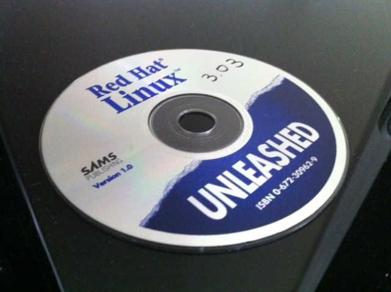
The original Red Hat Linux 3.0.3 CD that came with the book my uncle gave me back in 1996.
February 2011, It’s a cold Winter day in North Carolina, and I am sick with the flu. As I lay around the house trying to find something to do, I run across the one object arguably responsible for my entire 15 year academic and profession career. The thought crosses my mind: “I wonder if I could get this CD to install on a virtual machine?”
And that is what this nostalgic article is all about: a trip down memory lane with Linux. First I tried installing Red Hat Linux 3.0.3 (Picasso), from 1996, which runs on kernel 1.2.13. The boot process for installation is pretty involved as the CD back on those days was not bootable. The installation process involves 3 floppy disks, 1 for the boot image, and 2 ramdisk images. I was able to load all 3 floppy images, but the kernel died before the installation began.
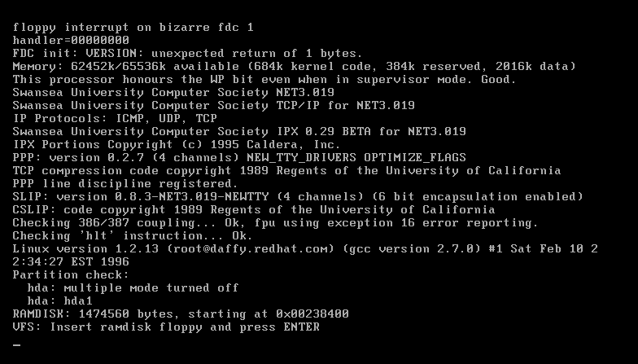
Red Hat Linux 3.0.3: boot image loaded.
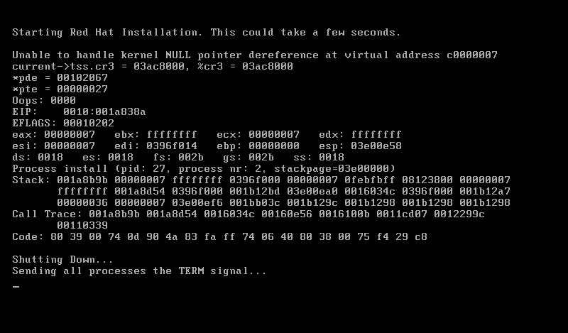
Red Hat Linux 3.0.3: failing to install
Unfortunately, I was not able to get version 3.0.3 running on the virtual machine (as you can see above), but I wasn’t ready to give up quite yet. I then decided to go through the next version I owned, Red Hat Linux 4.0. The results:
Version 4.0 was the first official version of Red Hat that was bootable via the CD (that I know of). I was able to boot it up, and even install the OS, but LILO, the bootloader that used to come with Linux distributions by default before GRUB came around, wouldn't install... so, yet again, I decided to move on to the next available version.
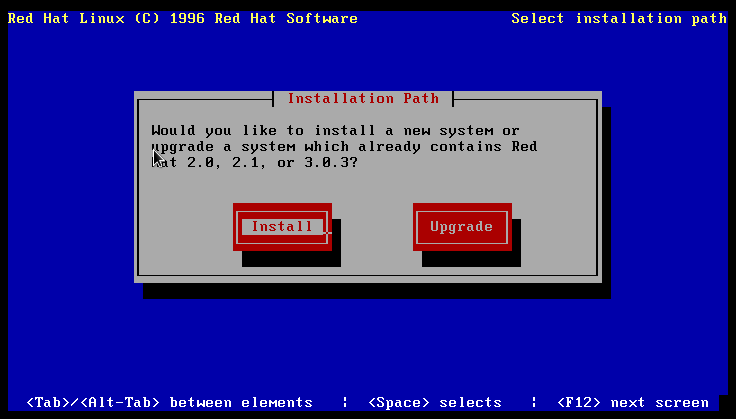
Red Hat Linux 4.0 (Colgate,1996).
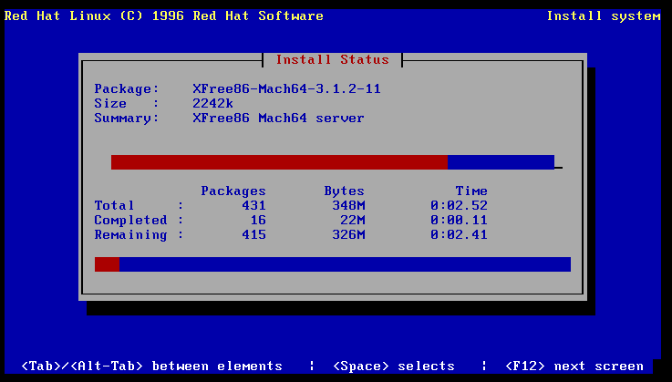
Red Hat Linux 4.0: Got stuck here... oh well.
Finally, success! The next version available was Red Hat Linux 4.2 (Biltmore, 1997). The installation was pretty straightforward except for getting X server running. Once I figured out how to at least get it running in VGA mode and use the correct mouse protocol, I was able to have some fun with it. Red Hat Linux uses kernel 2.0.30.
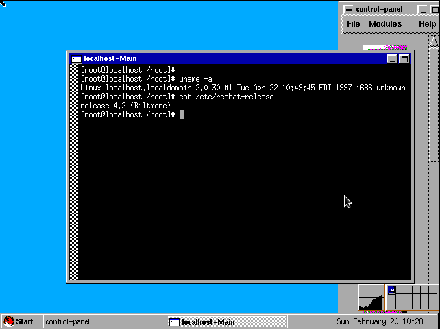
Red Hat Linux 4.2, Biltmore. The window manager name was called: FVWM95.
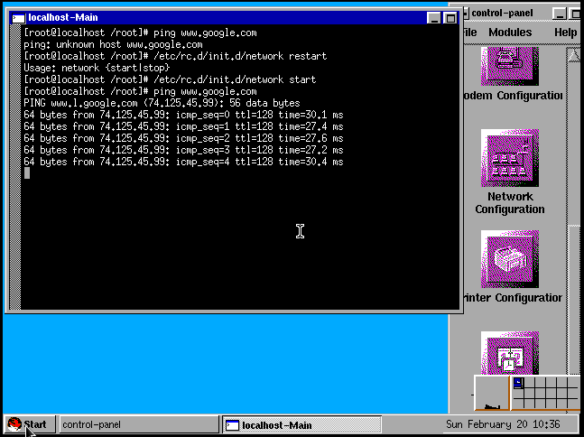
Red Hat Linux 4.2: I had to use the control-panel to start up eth0 using DHCP, but it worked.
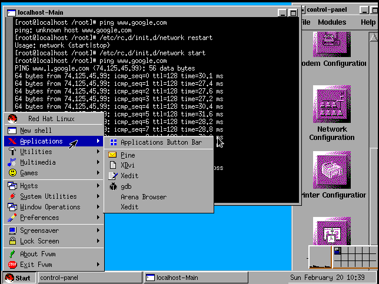Red Hat Linux 4.2: As you can see there wasn’t many applications available out of the box, but it was still more than Windows 95 had to offer. :-)
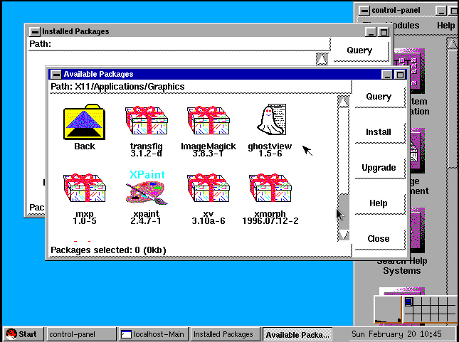Red Hat Linux 4.2: GUI for RPM package management. It is worth reminding the reader that 1997 precedes online update tools like up2date, yum and apt-get.
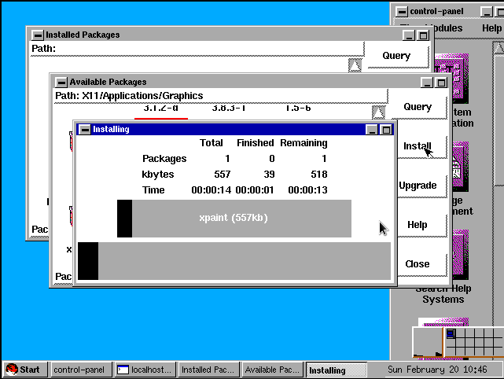
Red Hat Linux 4.2: Installing an application.
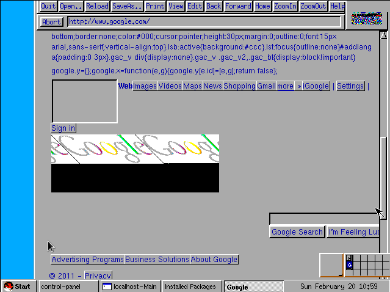
Red Hat Linux 4.2: Arena browser with today's Google loaded! :-) Back in those days, you had to download Netscape on your own.
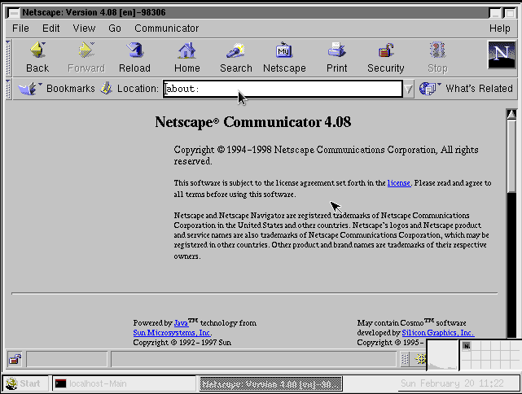
Red Hat Linux 4.2: I really wanted to surf the web with something a bit more advanced than the Arena Browser, after some searching around I found a binary of Netscape 4.08 for 2.0.x Linux kernel. Now, be aware that Netscape Communicator 4.08 only came out in November 1998, which means, by them time Netscape 4.08 came out Red Hat Linux 5.2 was already out. Anyway, I downloaded and installed it on Red Hat Linux 4.2 (May 1997), and to my surprise, it worked! Now, compare the Netscape look to the Arena Browser (previous screenshot) to have an idea why Netscape became the powerhouse it became back in those days.
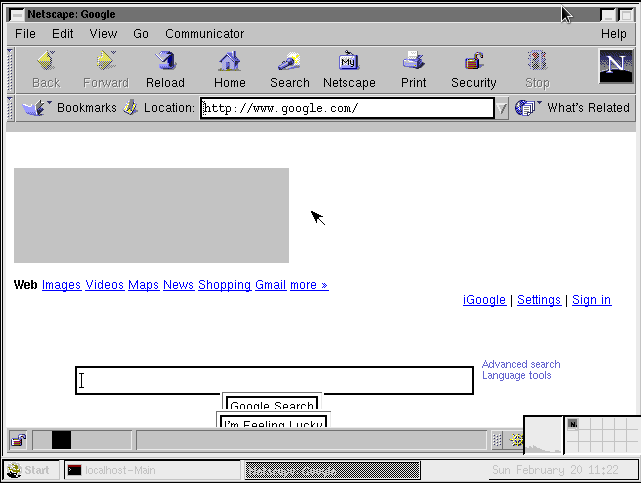
Red Hat Linux 4.2: Today's Google.com through the eyes of 1998's Netscape Communicator.
That weekend with the flu this past February ended up being quite fun as I did not stop after installing Red Hat Linux 4.2. I ended up spending all day installing Red Hat Linux 5.0, 6.1, 7.2, 9 and Fedora Core 1, and I hope to share them with you in future issues of the Linux Gazette.
| Share |
|
Talkback: Discuss this article with The Answer Gang
![[BIO]](../gx/authors/silva.jpg)
Anderson Silva works as an IT Release Engineer at Red Hat, Inc. He holds a BS in Computer Science from Liberty University, a MS in Information Systems from the University of Maine. He is a Red Hat Certified Architect and has authored several Linux based articles for publications like: Linux Gazette, Revista do Linux, and Red Hat Magazine. Anderson has been married to his High School sweetheart, Joanna (who helps him edit his articles before submission), for 11 years, and has 3 kids. When he is not working or writing, he enjoys photography, spending time with his family, road cycling, watching Formula 1 and Indycar races, and taking his boys karting,
When dealing with authentication, there are a myriad of systems out there that validate user identity and permissions: shadow passwords, Kerberos, NIS and LDAP, just to name a few.
In early Unix and (very early) Linux deployments, the applications would be responsible for directly interacting with whatever security system that was in place for a given server. When it was just the app scanning the /etc/passwd file, that wasn't so hard to manage, but once all those other authentication systems were deployed, then leaving authentication in the application space quickly became unmanageable.
In 1995, Sun Microsystems came up with a better way: a library that would handle all of the communication between applications and whatever authentication system that might be in place. This would take the onus of authentication off application developers' plates, and prove to be much easier to expand. If a new authentication system is put into place, a shared library object can be added to the library, without any changes to the app. This library is known as the pluggable authentication module (PAM), and it's a big part of authentication systems used today.
The biggest advantage to PAM is scalability: the capability to add a new authentication system to any given server without needing to re-configure (or worse, re-compile) a program is a big deal. That's not to say there isn't some sort of payment to be made -- nothing is free. Instead of touching the application, all PAM-aware applications have a text configuration file that must be edited to compensate for any new module within the PAM library.
At first, that may seem like more trouble than it's worth, since managing multiple configuration files could quickly get painful. In truth, individual PAM configuration files enable each application to use any authentication protocol they need, even if they're on the same system. So, one application can use LDAP, while another can rely on shadow passwords, if that's what you need. Better still, with one notable exception, switching to a new protocol is as simple as plugging in the protocol's module to PAM then editing the application(s) configuration files to make note of the change. The application only cares what PAM is telling it, not what the actual authentication solution says.
Another important feature of PAM, which makes it of interest to authentication providers like Likewise, is that it can be used for more than just password management. PAMs can be configured to outline session setup, logging, permissions management, as well as work directly with Active Directory for authentication.
Modules can be combined as well, thus giving apps a layered approach to authentication, if needed. Individual PAM configuration files are comprised of a list, known as a "stack," of all the PAM modules that will govern access for the application in question. Modules are invoked in their stack order and any module failure will usually block access for the app. More lenient policies can be put in place that might circumvent this all-or-nothing approach.
One example of such a policy might be to allow a user to physically access a system at any time of the day, but not grant access remotely during certain times. (Care must be taken, though, to allow for international travelers who may indeed need to login remotely in the middle of the server's night.) Another such module could authenticate a user only if their Bluetooth-enabled device was broadcasting nearby.
Of course, like any system, PAM isn't without its vulnerabilities. A security hole this past summer would allow a malicious user to own the permissions of a vulnerable system's shadow password file. With access to the shadow file, the cracker could easily reset the password for every account on the machine, including root. At that point, the cracker can do just about anything to the box, including resetting the shadow file back to its former state, so that system administrators would be less likely to notice something was amiss. This vulnerability was very quickly patched, but it outlines the need to keep a constant eye on any authentication- or security-based frameworks.
The extreme scalability and flexibility of the PAM framework means it can fit within almost any security policy an organization might come up with. If a module or combination of modules doesn't meet specific security needs, then a new module can be written as a solution. Linux users, for instance, can visit Andrew Morgan's The Linux-PAM Module Writers' Guide to learn more about creating such solutions.
PAM is a major tool in the security world, and one well worth understanding, since it can do far more than just handle passwords.
| Share |
|
Talkback: Discuss this article with The Answer Gang
![[BIO]](../gx/authors/vandoorn.jpg)
Yvo Van Doorn is a self-proclaimed "interoperability geek." currently employed at Likewise, Yvo has a background managing large Linux, UNIX, Mac and Windows infrastructures at large technology companies. Ask him how many unique VM OSs he has running on his personal machine. The number might shock you.
These images are scaled down to minimize horizontal scrolling.
Flash problems?All HelpDex cartoons are at Shane's web site, www.shanecollinge.com.
Talkback: Discuss this article with The Answer Gang
Part computer programmer, part cartoonist, part Mars Bar. At night, he runs
around in his brightly-coloured underwear fighting criminals. During the
day... well, he just runs around in his brightly-coloured underwear. He
eats when he's hungry and sleeps when he's sleepy.
More XKCD cartoons can be found here.
Talkback: Discuss this article with The Answer Gang
I'm just this guy, you know? I'm a CNU graduate with a degree in physics. Before starting xkcd, I worked on robots at NASA's Langley Research Center in Virginia. As of June 2007 I live in Massachusetts. In my spare time I climb things, open strange doors, and go to goth clubs dressed as a frat guy so I can stand around and look terribly uncomfortable. At frat parties I do the same thing, but the other way around.
These images are scaled down to minimize horizontal scrolling.
All "Doomed to Obscurity" cartoons are at Pete Trbovich's site, http://penguinpetes.com/Doomed_to_Obscurity/.
Talkback: Discuss this article with The Answer Gang
Born September 22, 1969, in Gardena, California, "Penguin" Pete Trbovich today resides in Iowa with his wife and children. Having worked various jobs in engineering-related fields, he has since "retired" from corporate life to start his second career. Currently he works as a freelance writer, graphics artist, and coder over the Internet. He describes this work as, "I sit at home and type, and checks mysteriously arrive in the mail."
He discovered Linux in 1998 - his first distro was Red Hat 5.0 - and has had very little time for other operating systems since. Starting out with his freelance business, he toyed with other blogs and websites until finally getting his own domain penguinpetes.com started in March of 2006, with a blog whose first post stated his motto: "If it isn't fun for me to write, it won't be fun to read."
The webcomic Doomed to Obscurity was launched New Year's Day, 2009, as a "New Year's surprise". He has since rigorously stuck to a posting schedule of "every odd-numbered calendar day", which allows him to keep a steady pace without tiring. The tagline for the webcomic states that it "gives the geek culture just what it deserves." But is it skewering everybody but the geek culture, or lampooning geek culture itself, or doing both by turns?

![[cartoon]](misc/xkcd/ballmer_peak.png "Apple uses automated schnapps IVs.")
{kind=link}
{kind=link}
{kind=link}
{kind=link}
{kind=link}